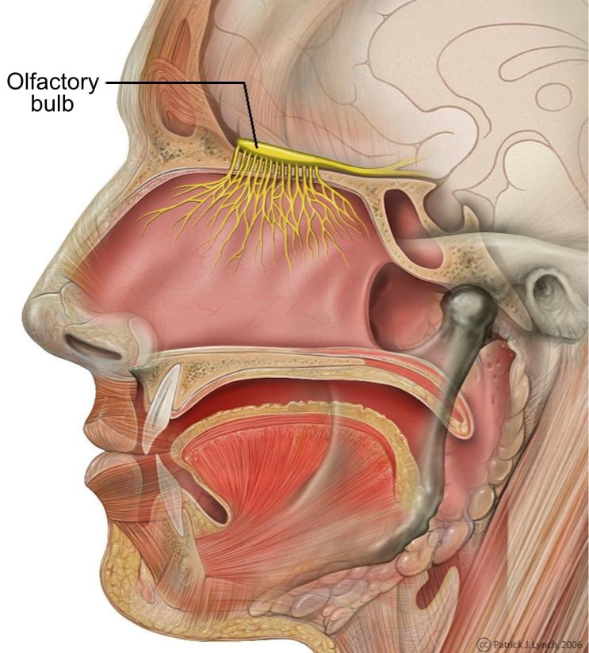

Koʻrish nervi (lotincha: nervus opticus) - bosh miya nervlarining 2-jufti. Koʻz toʻr pardasining yorugʻlik sezuvchi hujayralari qabul qilgan taʼsirotlar, Koʻrish nervi orqali bosh miyaga oʻtadi. Koʻrish nervi toʻr pardaning ganglioz hujayralari tolalaridan boshlanib, koʻz kosasidagi maxsus tyoshikdan kalla boʻshligʻiga kiradi. Koʻz ichidagi qismi — Koʻrish nervi soʻrgʻichi yoki diski — koʻz soqqasi orqa tubining sal ichkarisida joylashgan. Ponasimon suyakning turk egari ustida bir koʻzning Koʻrish nervi ikkinchi koʻzning Koʻrish nervi bilan qisman kesishadi (koʻrish chorrahasini hosil qiladi) va shundan keyin koʻrish yoʻllariga aylanib, bosh miyaning poʻstloq ostidagi koʻrish doʻmbogʻiga boradi, bu yerdan taʼsirotlar maxsus tolalardan bosh miya poʻstlogʻi ensa qismining ichki sathidagi koʻrish markaziga boradi. Shunda koʻz koʻradi.[1]
Hid bilish nervi [pegush o1Gʻas1ogsh8| — bosh miya nervlarinchng 1-jufti. Hidlov retseptor hujayralarining oʻsimtalari (aksonlar)dan hosil boʻladi (qarang Hid bilish azolari). Bu oʻsimtalar oʻta nozik nerv tolalariga kiradi. Sut emizuvchilarda (boshqa umurtqalilardan farqli) Hid bilish nervin. yaxlit bir tutam boʻlmay bir nechta hidlov ipchalarini hosil qiladi. Bu tolalar gʻalvirsimon suyak koʻndalang (ilma-teshik) plastinkasining teshiklaridan oʻtib, burun boʻshligʻiga kiradi va shilliq qavatga tarqaladi. Hid bilish nervin.ning hid qabul qiluvchi retsep-torlari burunning shilliq qavatida joylashgan.
